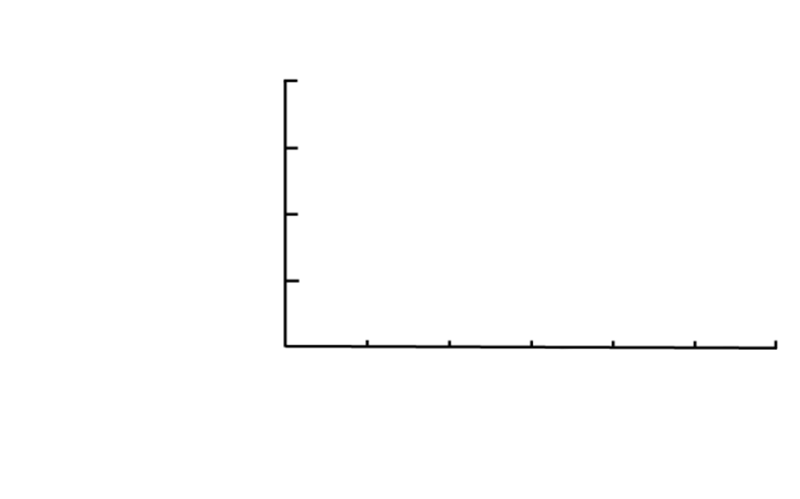

La Révolution des Œillets en 1974 favorise le retour au pays de l’intelligentsia. Lorsque la migration reprend dans les années 1980, elle a sensiblement changé. A la suite des chocs pétroliers des années 1970, la France, qui constituait la destination européenne la plus prisée des Portugais, ferme ses frontières (Baganha 2003). C'est dans les années 1980, que les Portugais trouvent le chemin de la Suisse.
Le principal motif d’immigration des Portugais est le travail. Deux Portugais sur trois sont titulaires d’un permis d’établissement, ce qui traduit une forte stabilisation de leur situation migratoire.
Pour le Portugal, il s’agit d’un exode rural sans précédent qui se trouve renforcé par l'exode de certains travailleurs de zones industrielles et urbaines ; 1,5 million de Portugais quittent le pays entre 1958 et 1974 (Soares de Bastos Schmid 2006). Le phénomène prit une telle ampleur que la population du Portugal baissa de façon notable dans plusieurs régions, et cela en dépit du maintien d’une natalité plutôt élevée.
L’immigration en provenance du Portugal prend un rapide essor entre 1986 et 1992.
La Suisse a signé avec le Portugal une convention administrative qui reprenait dans les grandes lignes les termes des accords conclus avec l’Italie et l’Espagne et canalisait la main-d’œuvre vers les emplois saisonniers.
Un service semi-privé de recrutement de la main-d’œuvre portugaise travaillait d’entente avec le Département fédéral de l’économie publique et le Département fédéral des affaires étrangères
Il y avait environ 196000 Portugais en Suisse en 2008. Ce chiffre repré- sente 12% de la population étrangère résidente permanente du pays. L’immigration portugaise constitue le troisième groupe étranger en termes de nombre, derrière les immigrations italienne et allemande.
Depuis une quinzaine d’années, le solde des mouvements migratoires est négatif. Bien que les nouveaux arrivants en Suisse soient nombreux, le nombre des Portugais qui, depuis 1996, quittent le pays est plus élevé que celui des Portugais qui s’y établissent
Les émigrés portugais, hommes et femmes,
des années 1960 étaient, avant tout, originaires
des districts situés au nord du Tage et provenaient généralement de familles paysannes.
Une partie notable
d’entre eux n’avait été que très peu, voire
pas du tout, scolarisée.
Il s’agit d’une population jeune, avec surreprésentation des personnes âgées de 20 à 59 ans ainsi que des moins de 15 ans. Il y a peu de Portugais âgés de plus de 60 ans en Suisse, car ils sont nombreux à retourner au pays à l’approche de l’âge de la retraite.
Ce groupe de migrants comprend également une proportion de jeunes de moins de 15 ans supérieure à la moyenne enregistrée auprès de l’ensemble des étrangers (23% contre 20%). Les Portugais sont également nettement plus nombreux que les membres d’autres groupes immigrés à avoir un ou plusieurs enfants de moins de 15 ans à charge avec près de 51% contre 28% des ressortissants des autres pays de l’UE et 19% des Suisses.